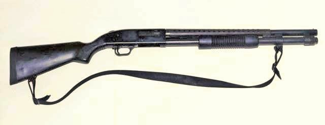

莫斯伯格500泵動式霰彈槍

莫斯伯格500（英語：Mossberg 500 Mos burger500）是一系列由美國槍械製造商O.F.莫斯伯格父子公司所研製及生產的泵動式散彈槍，發射23⁄4英吋和3英吋12鉛徑散彈、20鉛徑散彈和.410 bore。
- 自在1961年推出以後，所有的莫斯伯格M500型號都是以相同的基本設計為基礎。該槍最初推出時與溫徹斯特M1912相似的是，於槍機與護木左側之間只設有一根槍機連桿，但由於後來被發現會彎掉甚至斷裂，因此在雷明頓的雙重槍機連桿設計專利權屆滿以後，從1970年開始將莫斯伯格500更改為兩條槍機連桿設計。一個單一的大型鎖耳（英語：Lug）是用來固定後膛。管式彈倉位於槍管下面，並且通過螺紋擰入到機匣與其連接部。滑動式槍機釋放按鈕位於扳機護弓的左後方，而手動保險則位於機匣上部的後方（通常被稱為「柄腳保險」）。
每個型號的瞄準具與其他型號都有所不同，由簡單的圓珠狀準星、光纖瞄準具到安裝在機匣上的鬼環式照門等，或是用以安裝瞄準鏡的整合式瞄準鏡基座或輔助瞄準裝置安裝導軌都存在的。大部分型號都帶有機匣預鑽孔和攻絲用以安裝照門或是瞄準鏡基座。原廠的瞄準鏡基座是通過一個懸臂式瞄準鏡基座裝在槍管後部之上，其瞄準鏡基座會延伸至機匣頂部以上，但當槍管被拆卸下來以後，其瞄準鏡基座及裝上的瞄準鏡亦會保持在槍管以上。
由於設計上是為了在惡劣和骯髒的條件以下，例如水禽狩獵或戰鬥時使用，莫斯伯格500系列在設計上能夠輕易清潔和維修。所有的莫斯伯格500型號都配備了可互換的槍管（已知給定一個特定的槍械管式彈倉容量限制，即是一根設計上搭配在5發式彈倉管上使用的槍管將不能在裝上7發式彈倉管的槍械上使用），它可以在不需要利用任何工具以下拆卸，只要通過擰松其彈倉管的末端的螺絲，讓槍管得以拆卸下來。
槍機鎖進入位於槍管頂部的大型鎖耳，以確保堅實的槍機到槍管的連接，而非依賴於機匣以提供任何了閉鎖的強度。扳機組件，其中包括扳機、擊錘、阻鐵，裝在連同護弓的扳機體上，可以通過卸出機匣上的一個定位卡銷和向下拉動扳機護圈就能拆出來（如果安裝了手槍式握把的話，則通常首先必需將手槍式握把拆卸下來，因為幾乎所有這樣的手槍式握把會妨礙扳機組件從機匣上拉出）。升降器可以通過把該槍上保險並且把滑動式槍機一起拉動擠壓到後方，從而在卸出機匣上的升降器樞軸銷以後再把升降器拆出來。
莫斯伯格500系列的前護木可以向後拉動，使得槍機和槍機機框退出機匣，然後前護木可以通過將它向前推動拆卸下來。然後散彈藥筒阻擋裝置和斷續裝置將自由掉落，在機匣上只留下由各自的螺釘所固定的拋殼頂桿和手動保險。管式彈倉彈簧和托彈板可從機匣上擰松彈倉管並且拆卸下來（這樣做在一些新型的莫斯伯格500型號們上則可能比較困難）。這種程度的部份分解已經足以讓所有部件進行清潔。